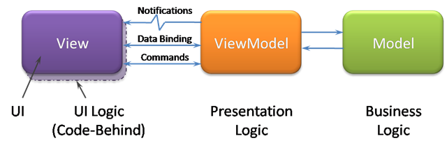

تا به حال دیده اید؟
چقدر در نرم افزارتان درخواست های Ajax دارید؟
فرم هایتان چطور validate می شوند؟
بدون Javascript سایتتان چقدر کاراست؟
فکر نکرده اید که چقدر منطق نرم افزارتان سمت کد های Javascript هست؟
هنوز هم فکر می کنید Javascript برای گرافیست هاست؟
هدف چیست؟
هدف این مقاله، ارایه بهترین روش برای طراحی پروژه های بزرگ javascript است به طوری که کمترین منابع را مصرف کرده و بیشترین خروجی را داشته باشد
و به ارایه مواردی همچون الگو های طراحی MVP, MVVM, MVC. تعریق Model View Controller ... توضیح عملکرد View. تعریف کلاس و ... می پردازیم
مخاطب کیست؟
اگر با Javascript آشنا هستید و در پروژه هایتان با این زبان کار می کنید.
قرار است بعد از این مقاله اصولی تر و با استفاده از تمام امکانات زبان کد بزنید.
کسانی که این مقاله را میخوانند می بایستی با javascript آشنا باشند تا با مفاهیم اولیه راحتتر ارتباط برقرار کنند.
توصیه میشود قبل از خواند حتماً کتابخانههایی مثلJQuery را حتماً بررسی کنید و کار عمومیشان را یاد بگیرید
Scalable
Javascript Application*
Scalable Application چیست؟
Scalable در لغت به معنی مقیاس پذیر است .
نرم افزاری که قسمتهای غیر بدیهی داشته باشد و نیاز به طراحان بیشتر حرفهای جهت نگهداری و توسعه داشته باشد. همچنین قسمت اساسی بررسی، پردازش و نمایش سمت کاربر و Browser باشد.
الگوی معماری نرمافزار
روشهای طراحی استانداردی هستند که با استفاده از آنها یک نرمافزار ساخته می شود.
ریسک کمتر و روش بهینه تر از نتایج کار است
MVC
ترکیب model, view و controller که یک module را ایجاد میکند طراحی MVC را ایجاد میکند. Model لایه data را می سازد. هرچیزی که مرتبط به اطلاعات ذخیره شونده هست باید از این لایه بگذرد. View لایهایست که کاربر از طریق آنdata را میبیند و Controller چسب بین این دو لایه خواهد بود.
MVC

MVVM
در ساختار این طراحی Model و View تفاوتی با MVC ندارد. VM یا ViewModel همچون Controller لایه نازکیست بین Model و View اما تفاوت هایش عبارت است از:
ارتباط دوطرفه با View
ViewModel ارایه کننده View است.
هر View ی مستقیماً به یک ViewModel bind میشود
معمولاً برای هر View فقط یک ViewModel وجود دارد.i این ارتباط یک به N می باشد.ii
Model و View فقط از طریق ViewModel ارتباط دارند.
MVC

MVP
این طراحی مشتق شده از MVC است و کاملاً شبیه آن عمل میکند فقط لایه Presenter کمی شبیه ViewModel عمل می کند.
تفاوتی که با MVVM دارد در این است که در این روش بر عکس MVVM ارتباط بین Presenter و View به صورت یک به یک می باشد.
MVP

MOVE
در این طراحی که شباهت زیادی با MVP دارد تفاوتی که وجود دارد Operation جای Presenter گرفته است. و از طرفی Model با استفاده از Event میتواند View را دوباره Render کند. یعنی دیگر نیازی نیست که Model به لایه ارتباطی بگوید که فلان data ی من عوض شده در عوض به view می گویید.
MOVE

Javascript Class
استفاده از function
استفاده از Object
استفاده از کلاسهای آماده
Class با Function
function Apple (type) {
this.type = type;
this.color = "red";
this.getInfo = function() {
return this.color + ' ' + this.type + ' apple';
};
}
Apple.prototype.getInfo = function() {
return this.color + ' ' + this.type + ' apple';
};
Class با Object
var o = {};
var o = new Object();
var apple = {
type: "macintosh",
color: "red",
getInfo: function () {
return this.color + ' ' + this.type + ' apple';
}
}
design patterns
الگو طراحی قسمتی از طراحی نرمافزار است که کمک خیلی زیادی جهت پیادهسازی الگوی معماری می کند.
Constructor Pattern
Module Pattern
Singleton Pattern
Observer Pattern
Prototype Pattern
Command Pattern
Facade Pattern
Factory Pattern
Mixin Pattern
Decorator Pattern
...
$.utils.timer = {
"listeners" : [],
"add_listener" : function (f) {
$.utils.timer.listeners.push(f);
},
"tick" : function () {
for(var i = 0; i<$.utils.timer.listeners.length; i++) {
$.utils.timer.listeners[i].apply(window);}
},
"start_timer" : function () {
setTimeout($.utils.timer.start_timer,1000);
$.utils.timer.tick();
}
};
فراخوانی Observer
$.utils.init = function () {
$.utils.timer.start_timer();
};
$.utils.timer.add_listener(current_function);
هر ۱۰۰۰ میلی ثانیه قست tick call میشود و به همه listener list call می شود.
الگوهای دیگر هر کدام به روشی این کار را انجام می دهند.
Event
مهمترین ورودی کاربر Event است. تمام اتفاقاتی که قرار است منجر به حرکتی بشود با استفاده از Event میتواند handle شود. اتفاقاتی مثل click و …
Event
// Event bind:
// jquery
$("#div").click(function(){
// ...
});
// javascript
var div = document.getElementById("div");
var listener = function(event) { /* ... */ };
div.addEventListener("click", listener, false);
div.removeEventListener("click", listener, false);
Model and Data
هنگامی که شما یک اطلاعات را از سرور دریافت میکنید آیا بهتر نیست اطلاعات را نگه دارید تا در درخواست مجدد همین اطلاعات از آنها استفاده کنید؟
مهمترین سؤال این مسأله این است دیتای مورد نظر کجا ذخیره شود؟
کجا ذخیره کنیم؟
var User = {
records: [],
fetchRemote: function(){ /* ... */ }
};
کتابخانه های نمونه
TaffyDB
// Create DB and fill it with records
var friends = TAFFY([
{"id":1,"gender":"M","first":"John","last":"Smith",
"city":"Seattle, WA","status":"Active"},
]);
// Find all the friends in Seattle
friends({city:"Seattle, WA"});
// john's record
var john = friends({id:1}).first();
Backbone.js Model
var Game = Backbone.Model.extend({
initialize: function(){
alert("Oh hey! ");
},
defaults: {
name: 'Default title',
releaseDate: 2011,
}
});
var GamesCollection = Backbone.Collection.extend({
model : Game,
old : function() {
return this.filter(function(game) {
return game.get('releaseDate') < 2009;
});
}
});
Controller and State
state را اینگونه تعریف میکنند: جوابهای متفاوتی که بر اساس یک درخواست ثابت میآید. به طور مثال یک آدرس ممکن از برای کاربر عضو یک شکل بیاید و برای کاربر غیر عضو یک شکل دیگر load شود.
در کل یک application یک state فعال دارد و لیستی از state های گذشته. ارتباط بین دو state یک transaction هست که برای حرکت در بین state ها call می شود.
باید دقت کرد تغییرات state منجر به controller میشوند و آنها عملگری را اجرا می کنند.transaction ها در این controller ها تعریف می شود
مهمترین سؤال این مسأله این است دیتای مورد نظر کجا ذخیره شود؟
Routing
یکی از مهمترین عوامل تغییر state یک برنامه routing است. به طور مثال آدرسهای twitter را دیدهاید به این صورت است
http://twitter.com/#!/efazati
کلاً هرچیزی بعد از شارپ (#) به سرور فرستاده نمیشود و قرار است که قسمتی که ID ی برابر این در صفحه دارد را در راس صفحه نشان دهد.
Ben Alman » jQuery hashchange event -> http://benalman.com/projects/jquery-hashchange-plugin/
Backbone.js Router
var Workspace = Backbone.Router.extend({
routes: {
"help": "help", // #help
"search/:query": "search", // #search/kiwis
"search/:query/p:page": "search" // #search/kiwis/p7
},
help: function() { ... },
search: function(query, page) { ... }
});
routes: {
"/download/*path": "downloadFile",
// <a href="/#/download/user/images/hey.gif">Download</a>
},
Template and View
یکی از مهمترین قسمتهای الگوهای طراحی (هر سه مورد MVVM MVC MVP ) قسمت View آن است.
اینکه دادهای که داده شده است کجا تبدیل به template می شود؟
Milk
Milk.escape('<tag type="evil">');
// => '<tag type="evil">'
Milk.escape = function(str) {
return str.split("").reverse().join("")
};
// Milk.escape is used to handle all escaped tags
var template = "{{data}} is {{{data}}}";
Milk.render(template, { "data": "reversed" });
// => "desrever is reversed"
Dependency Management
در زبان javascript کلاً چیزی به اسم Dependency Management وجود ندارد یعنی شما به راحتی نمیتوانید بالای فایلتان بنویسید Import X و از X استفاده کنید. کلاً قرار است که همه نیاز ها در خود html پایه با load کردن درست فایلها انجام شود.
Real-Time Web
یکی از جنبههای مهم نرمافزار real-time بودن قضیه است. همه چیز در لحظه ممکن است تغییر کند و application js نباید منتظر refresh از سمت کاربر باشد.
شاید شما این مشکل را با pull request های مداوم حل کنید. ولی آیا این راه درستیست؟ چند درصد request های شما بیهوده است؟
Testing and Debugging
یکی از مهمترین قسمتهای طراحی فاز test و debug است. اینکه روند اصلی کد در همه جا درست اجرا می شود؟ اینکه کلاً منطقی کد درستی نوشته اید؟ البته خیلی از javascript developer ها اینکار را نمیکنند و کار را خلاصه به console میکنند ولی آیا روش درستیست؟ نمیشود مطلقاً به این کار خرده گرفت ولی در نظر گرفتن چند نکته ضروریست
کدی که قابلیت test دارد با کد معمولی متفاوت است. برای اینکه قابل تست باشید تا جای ممکن نباید چیز جدید در end method ها استفاده کنید و همه چیز را از کسی که شما را call کردهاید بگیرید ولی معمولاً کد ها اینگونه نیست برای همین هنگام debug کردن اینکه کار کجا خراب شده است سختر می شود.
Deploy
به تمام اعمالی که جهت استقرار نرمافزار به صورت مناسب بر روی سرور باید انجام شود گفته می شود. کیفیت انجام این اعمال باعث سرعت بیشتر و … می شود.
کاهش Http Request
Caching
Minification
GZip
CDN
بررسی
با تشکر از
برگذار کنندگان
سومین همایش سراسری
نرم افزارهای آزاد / متن باز زنجان
سوال؟ ایده؟ نکته؟
محمد افاضاتی
Efazati.org